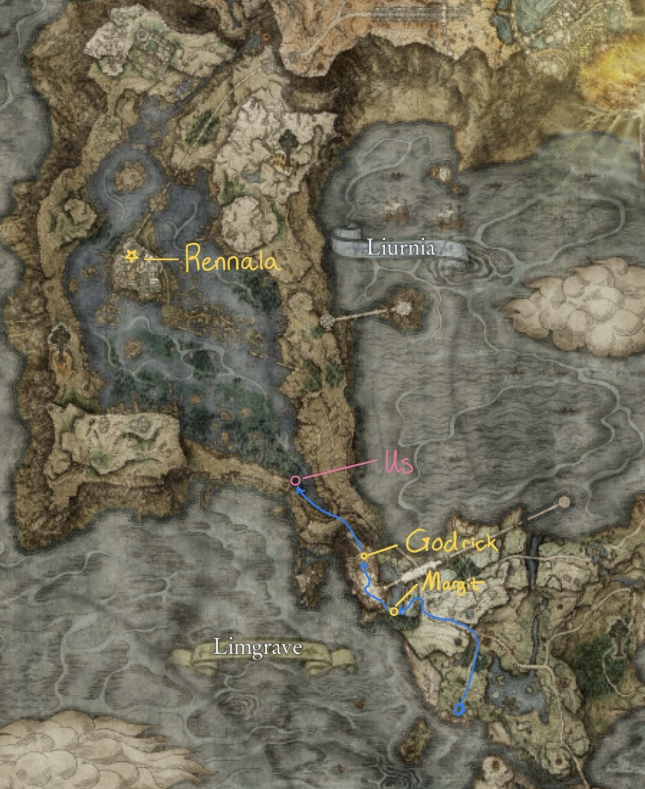
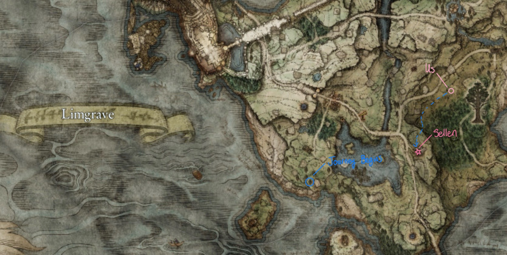

Elden Ring Story
The plot so far
For context, the elden ring is made up of runes. These runes control aspects of life in the lands between (our continent). For an example of what each rune does, no one in the lands between can truly die because Marika removed the rune of death from the elden ring and gave it to a mystical beast called Maliketh long ago.
After the great war, called The Shattering, we began our story as a lowly tarnished with no maidens. The lands between have fallen into disarray after the grief-stricken Marika destroyed the Elden Ring after she lost her son. As the current rulers of the lands between, Marika and Radagon sit idly by while their royal “Golden Order” fails to aid those in need. A new Elden lord must rise to power, or the lands between will continue to suffer for the rest of time.
As we begin our quest, we set out in search of the Erdtree. The Erdtree has protected our lands for generations and shielded us from death all the while. We know that the Erdtree must be great, and that its benevolence will continue shield us from suffering, but we need to make it to the base of the Erdtree so that it can anoint us as the new Elden Lords.
Thus far, we have encountered two servants of Marika who have stood in our way - Margit and Godrick. Margit was the child of Marika and Godfrey (her former husband). Godrick was once an ordinary man, but given the opportunity, he chose to steal and ’graft’ the limbs of less powerful beings to himself in order to become more powerful.
Where we are
After defeating Godrick, we see that we might not be able to do this on our own. We progress to Liurnia of the Lakes in search of the great sorceress, Rennala. It is said that she was once the most powerful noble in the lands between, and even Marika could not bend her knee, but that was when Radagon was by her side. She and Radagon had three children together - Ranni, Radahn, and Rykard. Over time, a terrible fate befell each of her children, and Radagon’s love for her began to wane.
When Marika and Godfrey separated, Radagon saw an opportunity to become a demigod, and he left Rennala for Marika. In combination with the loss of her beloved daughter, Ranni, Rennala fell to madness.

Where we’re going
Now, we seek her aid in our quest to become the Elden Lord. Because Radagon disgraced her so, we believe we can convince her to fight along side us to create a new Golden Order and truly establish peace in the lands between. There is only one small problem - Rennala has gone completely mad. We need to cure her of this madness, and to do so, we must enter her mind and fight the madness from within.
There is one stumbling block between us and Rennala - Radagon’s parting gift to Rennala, the Red Wolf of Radagon. In order to defeat this wolf, we seek the aid of Sorceress Sellen, who aims to study at the Raya Lucaria academy run by Rennala herself.
